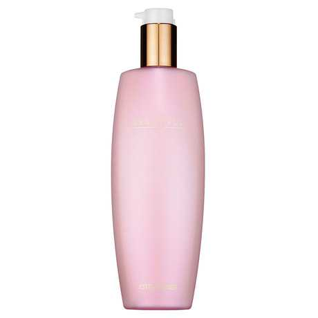

Među kozmetičkim proizvodima za intenzivnu obnovu i hidrataciju kože sve je više losiona i seruma čiji je osnovni sastojak pužev gel.
Riječ je o sluzi (sekretu) puža Helix aspersa koji se u našim krajevima najčešće naziva vinogradarskim ili vrtnim. Blagotvorno djelovanje puževe sluzi poznato je već stoljećima (uključujući već spomenute tretmane stavljanja puževa na lice i tijelo), a danas je sve popularnije zbog rastućeg trenda “čudotvornih” prirodnih sredstava za uljepšavanje
Originalni losion od mukopolisaharida puža koji vidljivo smanjuje akne i ožiljke od akni, opekline, ožiljke nakon operacija i zahvata, strije, sunčane i staračke pjege. Ima protuupalni učinak te pomaže zarastanju novih ožiljaka, a omekšava i zaglađuje stare. Kod tretmana protiv akni (masna koža) smiruje upalne procese i smanjuje proizvodnju sebuma.

Plaćanje se vrši pouzećem ili uplatom na žiro račun. Cijena losiona od 50mL jest 99kn. Cijena losiona od 100mL jest 149kn. Dostava na području Republike Hrvatske:
Za bilo kakve druge upite, molimo Vas da nam se obratite putem kontakata koji su gore navedeni.